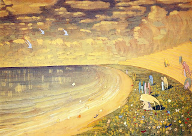

Sanhedrin 99 - Torah Study as the Meaning of Life
The Messianic Era may last for 40 years , 70 years , 400 years , or 365,000 years - God's year.
The books of Prophets contain many descriptions of the utopian idyllic state of life. All these refer only to the Messianic Era, but the reward of the World to Come is beyond human comprehension, and " No eye except Yours, O God, has seen that which He will do for one who awaits Him " - this is the opinion of Rabbi Yochanan. However, Shmuel says that there will be no difference between this world and the Messianic Era, except that the Jews will be completely free from foreign dominion.
What is the reward for constant Torah study? " If a person toils in the study of Torah, the Torah will toil for him after death " - asking God to keep giving him knowledge.
Every man is created for toil , and it is not physical labor but verbal toil , and specifically the study of Torah, because of " This Book of the Torah is not to leave your mouth ." Therefore, happy is one who merits to toil in Torah.
Art: Mikolajus Ciurlionis - Paradise